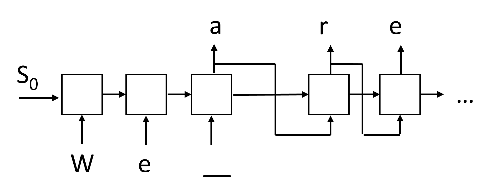

Generative networks
Pre-lecture quiz
Recurrent Neural Networks (RNNs) and their gated cell variants such as Long Short Term Memory Cells (LSTMs) and Gated Recurrent Units (GRUs) provided a mechanism for language modeling in that they can learn word ordering and provide predictions for the next word in a sequence. This allows us to use RNNs for generative tasks, such as ordinary text generation, machine translation, and even image captioning.
✅ Think about all the times you've benefited from generative tasks such as text completion as you type. Do some research into your favorite applications to see if they leveraged RNNs.
In RNN architecture we discussed in the previous unit, each RNN unit produced the next hidden state as an output. However, we can also add another output to each recurrent unit, which would allow us to output a sequence (which is equal in length to the original sequence). Moreover, we can use RNN units that do not accept an input at each step, and just take some initial state vector, and then produce a sequence of outputs.
This allows for different neural architectures that are shown in the picture below:

Image from blog post Unreasonable Effectiveness of Recurrent Neural Networks by Andrej Karpaty
- One-to-one is a traditional neural network with one input and one output
- One-to-many is a generative architecture that accepts one input value, and generates a sequence of output values. For example, if we want to train an image captioning network that would produce a textual description of a picture, we can a picture as input, pass it through a CNN to obtain its hidden state, and then have a recurrent chain generate caption word-by-word
- Many-to-one corresponds to the RNN architectures we described in the previous unit, such as text classification
- Many-to-many, or sequence-to-sequence corresponds to tasks such as machine translation, where we have first RNN collect all information from the input sequence into the hidden state, and another RNN chain unrolls this state into the output sequence.
In this unit, we will focus on simple generative models that help us generate text. For simplicity, we will use character-level tokenization.
We will train this RNN to generate text step by step. On each step, we will take a sequence of characters of length nchars, and ask the network to generate the next output character for each input character:

When generating text (during inference), we start with some prompt, which is passed through RNN cells to generate its intermediate state, and then from this state the generation starts. We generate one character at a time, and pass the state and the generated character to another RNN cell to generate the next one, until we generate enough characters.

Image by the author
✍️ Exercises: Generative Networks
Continue your learning in the following notebooks:
Soft text generation and temperature
The output of each RNN cell is a probability distribution of characters. If we always take the character with the highest probability as the next character in generated text, the text often can become "cycled" between the same character sequences again and again, like in this example:
today of the second the company and a second the company ...
However, if we look at the probability distribution for the next character, it could be that the difference between a few highest probabilities is not huge, e.g. one character can have probability 0.2, another - 0.19, etc. For example, when looking for the next character in the sequence 'play', next character can equally well be either space, or e (as in the word player).
This leads us to the conclusion that it is not always "fair" to select the character with a higher probability, because choosing the second highest might still lead us to meaningful text. It is more wise to sample characters from the probability distribution given by the network output. We can also use a parameter, temperature, that will flatten out the probability distribution, in case we want to add more randomness, or make it more steep, if we want to stick more to the highest-probability characters.
Explore how this soft text generation is implemented in the notebooks linked above.
Conclusion
While text generation may be useful in its own right, the major benefits come from the ability to generate text using RNNs from some initial feature vector. For example, text generation is used as part of machine translation (sequence-to-sequence, in this case state vector from encoder is used to generate or decode translated message), or generating textual description of an image (in which case the feature vector would come from CNN extractor).
🚀 Challenge
Take some lessons on Microsoft Learn on this topic
- Text Generation with PyTorch/TensorFlow
Post-lecture quiz
Review & Self Study
Here are some articles to expand your knowledge
- Different approaches to text generation with Markov Chain, LSTM and GPT-2: blog post
- Text generation sample in Keras documentation
Assignment
We have seen how to generate text character-by-character. In the lab, you will explore word-level text generation.